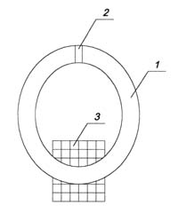
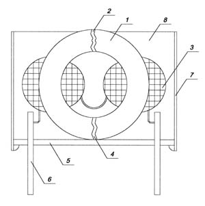
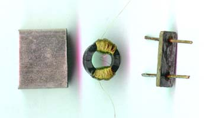
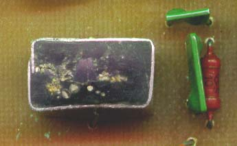

Кольцевая индукционная магнитная головка на основе ферритового кольца
Введение

Рис. 1. Кольцевая индукционная магнитная головка: 1 - сердечник, 2 - рабочий зазор, 3 - обмотка.
Магнитные головки помимо традиционного использования в звукозаписывающей и звуковоспроизводящей аппаратуре могут иметь и другие сферы применения, например, для записи и чтения магнитных карт, в детекторах магнитных меток на банкнотах, чеках, товарах, а также в составе разнообразных конструкций датчиков магнитного поля.
В процессе конструирования и развития звукозаписывающей и звуковоспроизводящей аппаратуры и с переходом к использованию магнитных лент определилась оптимальная конструкция магнитной головки, а именно, кольцевая индукционная магнитная головка [3]. Конструкция кольцевой индукционной магнитной головки показана на рис. 1. Она состоит из кольцевого сердечника (1), являющегося концентратором магнитного поля (магнитомягкий материал с высокой магнитной проницаемостью и высокой стойкостью к истиранию, например, сендаст) с рабочим зазором (2). На концентраторе размещается обмотка (3). Магнитная головка является обратимым преобразователем, т. е. при пропускании тока через обмотку в рабочем зазоре возникает магнитное поле, а при изменении магнитного поля в зазоре в обмотке наводится электродвижущая сила (ЭДС, E) в соответствии с законом Фарадея [2] E=-NdF/dt, где N - число витков катушки, F - мгновенное значение магнитного потока в сердечнике. Из формулы следует, что величина ЭДС будет тем больше, чем большее число витков имеет обмотка, чем больший магнитный поток создается в сердечнике источником магнитного поля (в частности, чем больше магнитная проницаемость материала сердечника) и чем больше скорость изменения магнитного потока (что может определяться свойствами зазора).
Конструкция магнитной головки
В некоторых случаях применение готовых магнитных головок, например, от кассетных магнитофонов представляется невозможным или нецелесообразным, поэтому возникла задача разработки магнитной головки достаточно простой конструкции, которая была бы дешевой в изготовлении и при этом позволяла бы иметь некоторые дополнительные качества, расширяющие область ее применения. В качестве сердечника было решено использовать ферритовое кольцо. Ферритовые кольца считаются малопригодными для изготовления магнитных головок по причине низкой индукции насыщения, низкой стабильности свойств, низкой механической прочности и долговечности (могут появляться сколы и микротрещины), плохой технологичности. Однако эти недостатки относятся скорее к магнитным головкам для записи и воспроизведения звука с достаточно высоким качеством. Если магнитная головка используется для других целей, то вполне может оказаться, что недостатки ферритов не играют существенной роли.
Эскиз магнитной головки на основе ферритового кольца представлен рис. 2.

Рис. 2. Магнитная головка на основе ферритового кольца: 1 - сердечник (феррит М3000НМ К10 х 6 х 3), 2 - рабочий зазор, 3 - обмотка (2 х 350 вит. ПНЭТ-ИМИД 0.063 мм), 4 - нерабочий зазор, 5 - основание (фольгированный стеклотекстолит), 6 - выводы, 7 - электромагнитный экран (жесть), 8 - эпоксидная смола с наполнителем (ферритовый порошок).
Технология ее изготовления следующая. В качестве сердечника (1) использовано кольцо из феррита марки М3000НМ типоразмера К10 х 6 х 3 (внешний диаметр - 10 мм, внутренний диаметр - 6 мм, высота кольца 3 мм). Кольцо ломается на две примерно равные части (можно предварительно сделать надрезы напильником). Затем на каждую из частей наматывается по 350 витков медного провода (3) в достаточно прочной изоляции диаметром 0.05 - 0.08 мм (использовался провод ПНЭТ-ИМИД диаметром 0.063 мм). В использовании средств, изолирующих обмотку от кольца, нет необходимости. Вначале провод наматывается на одну из частей кольца, затем без обрыва на другую часть, таким образом, чтобы соединение обмоток после восстановления целостности кольца оказалось последовательным. Далее части кольца склеиваются по изломам с помощью клея БФ-2, БФ-4 или аналогичного. После склеивания неизбежно образуются зазоры (за счет присутствия клея), приблизительно идентичные по свойствам. Один из них в дальнейшем станет рабочим (2), а другой - нерабочим (4). Полученная конструкция размещается на основании (5) с вмонтированными в него выводами (6). Концы обмоток (3) припаиваются к выводам (6). Далее к основанию (5) припаивается электромагнитный экран (7) из луженой жести (от консервных банок). Приблизительные размеры экрана (7) 14 х 15 х 9 мм3. Внутрь экрана (7) заливается эпоксидная смола (8) с ферритовым порошком в качестве наполнителя (дополнительное магнитное экранирование). После отвержения смолы производится обтачивание абразивным кругом рабочей поверхности для ее скругления, а также для того, чтобы при необходимости открыть рабочий зазор (2).
Внешний вид составных частей магнитной головки показан на рис. 3.

Рис. 3. Внешний вид составных частей магнитной головки на основе ферритового кольца М3000НМ К10 х 6 х 3. Слева направо: электромагнитный экран (жесть), магнитная головка, монтажная колодка.
Состояние разработки:
Изготовлены опытные образцы магнитных головок на основе ферритового кольца. Они опробованы в детекторе магнитных меток на банкнотах [1] (см. рис. 4). Представляется перспективной возможность использования магнитной головки приведенной выше или видоизмененной конструкции в качестве датчика магнитного поля, например, в магнитных сканерах для построении топографии магнитного поля приближенных объектов.

Рис. 4. Магнитная головка на основе ферритового кольца на плате детектора магнитных меток [1]. Видны дефекты, образовавшиеся в эпоксидной смоле при ее отвержении (на электрические и магнитные характеристики магнитной головки практически не влияют), а в центре - часть ферритового кольца с рабочим зазором.
Ссылки:
03.12.2004
04.05.2006
21.06.2010
Альтернативные источники
энергии
Компьютеры и
Интернет
Магнитные поля
Механотронные системы
Перспективные
разработки
Электроника и технология